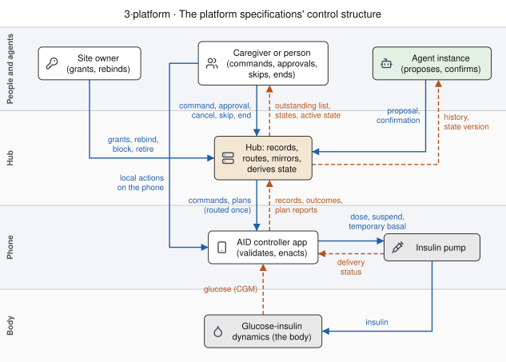

L2–L5 Control loops: what each mechanism controls, and the unsafe control actions its rules prevent¶
Living document, last changed 2026-10-18 at 8cb0b5ed9.
Contributor-facing. Living specification analysis, current at main 85c645c8 (2026-10-18).
Covers layers L2–L5 of the platform index; terms are in the
glossary. Decisions: D18 and D19.
Queue: SPEC-STPA-PLATFORM.
An analysis across the eight specifications in the reading order; read it after commands, or after all eight. Expect the losses and hazards, the control structure the specifications set up, one section per control loop with its unsafe control actions and the rule that prevents each, the patterns that apply to the proposed mechanics, what the analysis found, and the checks that hold it to the specifications.
This page applies STPA (System-Theoretic Process Analysis) to the mechanisms the platform specifications propose. STPA models a system as controllers that issue control actions and receive feedback, and asks, for each control action, how it could be unsafe: provided when it should not be, not provided when it should be, provided too early or too late, or applied for too long or too short. Each answer is an unsafe control action (UCA). The specifications' rules are then read as the constraints that prevent them. Where no rule prevents one, the analysis names the gap and the specification lists it as open.
Status: the loops are drawn from the specifications, which are proposed or specified and not implemented. Of 103 entries, 68 are covered by a rule and a case, 11 are the controller's responsibility (D18), 3 have a rule and no case, and 21 are gaps, each listed in its specification's open items.
1. Files¶
| file | holds |
|---|---|
specs/sync/stpa/platform-control-loops.yaml |
losses, hazards, loops, control actions, every entry with its hazards, severity, constraints, verification and status, and what was considered not hazardous for each STPA type |
tools/nsschema/test_stpa.py |
the checks in §8 |
tools/nsschema/stpa_tables.py |
writes the tables in §4 from the file |
docs/STPA-USAGE-GUIDE.md |
the ecosystem's STPA method, severity scale (S1–S4) and id conventions |
traceability/stpa/cross-project-patterns.md |
the controller-side unsafe control actions (UCA-BOLUS, UCA-CARB, UCA-REMOTE, UCA-SYNC) this analysis meets at the hub |
2. Losses and hazards¶
| loss | |
|---|---|
| LOSS-1 | Harm to the person with diabetes from insulin delivered or withheld (hypoglycaemia, hyperglycaemia, ketoacidosis). |
| LOSS-2 | Loss of the ability to say afterwards what was asked, by whom, and what was enacted, for care, incident review or regulatory review. |
| LOSS-3 | Disclosure of health data, or of control over therapy, to someone the person did not authorise. |
| hazard | losses | |
|---|---|---|
| HAZ-1 | Insulin delivery, or a therapy setting, that the person or someone they authorised did not intend at that time, including the same change enacted twice. | LOSS-1 |
| HAZ-2 | A therapy change someone intended is not made, while the people relying on it believe it was. | LOSS-1 |
| HAZ-3 | A person, controller or agent acts on a picture of delivered insulin, active therapy or a command's fate that differs from what happened. | LOSS-1, LOSS-2 |
| HAZ-4 | Control over therapy, or health data, reaches someone not authorised for it, such as another tenant or a reader promoted to an actor. | LOSS-1, LOSS-3 |
| HAZ-5 | The record cannot show what was asked, by whom, what was enacted, and when. | LOSS-2 |
Losses and hazards use LOSS- and HAZ- so that they do not read as the layers L0–L5.
3. The control structure¶
Solid arrows are control actions; dashed arrows are feedback. Every box is a role, not a product.
The drawing's source is tools/structure-diagrams/inputs/3-platform-control.yaml, rendered with
tools/structure-diagrams/render.py.

Two observations follow from the drawing.
- The hub has no control action on the pump. D18 puts every dosing decision in the controller, and the structure shows it: the hub's control actions are routing and delivering what a sender asked, and the controller validates before it acts. A second path reaches the controller as well: treatments other clients wrote, which a controller that accepts them (S10) acts on with none of a command's record, expiry or outcome (§4.4). The pump has more than one controller upstream of it (the person, the algorithm, each caregiver and agent), and only the controller arbitrates among them (state and intent S1).
- The hub is in the feedback path of every other controller. A caregiver decides whether to send a bolus from the hub's history, its active state and its command states; an agent bases a proposal on the hub's state version; a controller that downloads treatments acts on records the hub stored. So the rules about what the hub reports (the command states, the active-state rules A1–A13, the sync rules T6–T10, re-send matching I5) are safety constraints, although the hub never doses.
4. The loops¶
Each loop lists its control actions and feedback, then its entries. Prevented by names rules
and sections; status is covered (a rule and a case), uncased (a rule, no case),
controller (the controller's own validation, D18) or gap (no rule; the open item named).
4.1 A remote command¶
Commands §2, §4, §5 and §7. The sender sends a command (CA-CMD-SEND), or would cancel one (CA-CMD-CANCEL, not specified); the hub records it and delivers it by push or fetch (CA-CMD-DELIVER); the controller validates and enacts it (CA-CMD-ENACT) and reports an outcome, which the hub shows the sender as the command's state (FB-CMD-STATE). The sender's process model is the command's state; the hub's is its record; only the controller knows what the pump did.
flowchart LR
sender["Sender"] -- "CA-CMD-SEND" --> hub["Hub"]
hub -- "CA-CMD-DELIVER" --> ctl["Controller"]
ctl -- "CA-CMD-ENACT" --> pump["Pump"]
pump -. "delivery status" .-> ctl
ctl -. "outcome report" .-> hub
hub -. "FB-CMD-STATE" .-> sender| id | type | unsafe control action or feedback | hazards | severity | prevented by | status |
|---|---|---|---|---|---|---|
| UCA-CMD-001 | provided | A sender sends a second command for the same intent while the first is pending, sent, fetched or unconfirmed, and both are enacted. | HAZ-1 | S4 | CM3, CM4, CM24 | gap: commands §9 |
| UCA-CMD-002 | provided | A retry of one request is treated as a new command. | HAZ-1 | S4 | CM4 | covered |
| UCA-CMD-003 | timing | A command is enacted long after it was sent, when the sender's reason for it no longer holds. | HAZ-1 | S3 | CM3, CM10 | covered |
| UCA-CMD-004 | provided | A command reaches an instance other than the live device holder of the channel's command sink, such as a lapsed former holder, the newest instance, or a simulator. | HAZ-1 | S4 | commands §2, CM1, CM2 | covered |
| UCA-CMD-005 | provided | A command reaches an instance on another tenant, or a push for one tenant is sent with another tenant's or the deployment's credentials. | HAZ-4, HAZ-1 | S4 | CM6, CM19, CM20 | covered |
| UCA-CMD-006 | provided | One command is delivered more than once, by a push and again by a fetch that returns sent commands, and the controller enacts it each time. | HAZ-1 | S4 | CM18, CM21 | covered |
| UCA-CMD-007 | provided | The payload a controller receives differs from the one the sender sent. | HAZ-1 | S4 | CM5, CM10 | covered |
| UCA-CMD-008 | not-provided | A push is lost and the destination never receives the command, while the sender reads sent as delivered. | HAZ-2, HAZ-3 | S2 | CM17, CM18 | covered |
| UCA-CMD-009 | timing | A command is sent or fetched at or after its expiry. | HAZ-1 | S3 | CM3 | covered |
| UCA-CMD-010 | provided | A controller enacts a remote command that its own limits, or a recent local action, should have refused. | HAZ-1 | S4 | CM5, CM10 | controller |
| UCA-CMD-011 | provided | A controller enacts part of a command, such as storing a meal's carbs and refusing its bolus, and reports one final state. | HAZ-3 | S3 | CM9 | gap: commands §9 |
| UCA-CMD-012 | timing | A controller enacts a command past its expiry because the hub's clock and its own differ. | HAZ-1 | S3 | CM10 | covered |
| UCA-CMD-013 | not-provided | A controller does not enact a command it reported as succeeded, such as a bolus the pump later fails. | HAZ-2, HAZ-3 | S3 | CM9 | gap: commands §9 |
| FB-CMD-001 | incorrect | A command that was handed over reads expired or undeliverable, and the sender sends it again. | HAZ-3, HAZ-1 | S4 | CM2, CM3 | covered |
| FB-CMD-002 | incorrect | A command reads succeeded because a subject other than the destination's bound subject reported it. | HAZ-3 | S3 | CM7 | covered |
| FB-CMD-003 | incorrect | A command reads as done because it was sent or fetched. | HAZ-3 | S3 | CM7, CM17 | covered |
| FB-CMD-004 | absent | The sender learns nothing after the hub accepts a command, with no record of it and no outcome. | HAZ-3, HAZ-5 | S3 | CM1, CM7 | covered |
| UCA-CMD-014 | provided | A process other than the destination that holds its credential, such as another app sharing API_SECRET under single, fetches the command, which moves it to fetched and out of the controller's next fetch, or reports its outcome. | HAZ-2, HAZ-3 | S3 | CM7, CM18 | gap: commands §9 |
| UCA-CMD-015 | not-provided | A sender cannot cancel a pending command after the reason for it went away, such as a meal not eaten. | HAZ-1 | S3 | CM3, CM25 | covered |
4.2 A proposal and its approval¶
Commands §6 and
authority §7. A proposer proposes (CA-PROP-PROPOSE),
anyone who may read it may evaluate it (CA-PROP-EVALUATE), and an approver approves it
(CA-PROP-APPROVE), which creates a command that then runs the loop in §4.1. The approver's
process model is the proposal's payload, its basedOn and what the hub shows as active (§4.5);
the approval is a control action taken on that model, and every check CM13–CM15 makes is a check
that the model still matches the hub's record.
flowchart LR
agent["Proposer"] -- "CA-PROP-PROPOSE" --> hub["Hub"]
evaluator["Evaluator"] -- "CA-PROP-EVALUATE" --> hub
hub -. "proposal, evaluations, state version" .-> approver["Approver"]
approver -- "CA-PROP-APPROVE" --> hub
hub -- "command (§4.1)" --> ctl["Controller"]| id | type | unsafe control action or feedback | hazards | severity | prevented by | status |
|---|---|---|---|---|---|---|
| UCA-PROP-001 | provided | A credential or tool that may only read proposes a change. | HAZ-4 | S3 | CM12 | covered |
| UCA-PROP-002 | provided | A proposer floods a channel with proposals, and the approver approves from habit rather than reading. | HAZ-1 | S3 | CM11 | gap: commands §9 |
| UCA-PROP-003 | provided | An approval creates a command whose payload differs from the one the approver approved. | HAZ-1 | S4 | CM13 | covered |
| UCA-PROP-004 | provided | An approver approves a payload whose meaning they misread, such as its units or which product it is for, because nothing declares the payload's shape for a display to render. | HAZ-1 | S4 | CM5 | gap: commands §9 |
| UCA-PROP-005 | provided | An approval reaches a device other than the one whose state the proposer read. | HAZ-1 | S4 | CM13 | covered |
| UCA-PROP-006 | provided | An approval is given after the controller's reported intents changed from the ones the proposal was based on. | HAZ-1 | S3 | CM15 | covered |
| UCA-PROP-007 | provided | Two proposals on one channel are approved before the controller reports either, so both pass the state-version check and both are enacted. | HAZ-1 | S4 | CM15 | gap: commands §9 |
| UCA-PROP-008 | provided | An approval is enacted under a different definition from the one the proposal was made against, after the destination instance renewed under a new definitionId. | HAZ-1 | S3 | CM11, CM13, S12 | gap: commands §9 |
| UCA-PROP-009 | provided | The proposer approves its own proposal. | HAZ-1, HAZ-4 | S3 | CM14 | covered |
| UCA-PROP-010 | timing | A proposal is approved after its expiry. | HAZ-1 | S3 | CM13 | covered |
| UCA-PROP-011 | provided | An evaluation changes a proposal's state or approves it. | HAZ-1 | S3 | CM16 | covered |
| UCA-PROP-012 | provided | A dose proposal is approved after the person dosed locally, because the state version covers intents and not doses or carbs. | HAZ-1 | S4 | A12, CM15, CM22 | covered |
| UCA-PROP-013 | provided | Two approvers approve one proposal and two commands are created. | HAZ-1 | S4 | CM13 | covered |
4.3 Which instance receives commands¶
Registration §8 and §9, authority §4 and §6. The hub grants and keeps a command-sink role (CA-ROUTE-GRANT) from each instance's renewals; the owner moves a product or a role (CA-ROUTE-REBIND). The controlled process is the routing table: which instance a command for a channel reaches. Feedback is the renewal reply (a changed etag, a 412) and the owner's listing.
| id | type | unsafe control action or feedback | hazards | severity | prevented by | status |
|---|---|---|---|---|---|---|
| UCA-ROUTE-001 | provided | A device command-sink role goes to an instance not bound to the product, such as another subject's development build. | HAZ-1, HAZ-4 | S4 | authority §6 | covered |
| UCA-ROUTE-002 | provided | Two instances, such as an old and a new phone, both hold a channel's device command sink and both enact. | HAZ-1 | S4 | registration §9 | covered |
| UCA-ROUTE-003 | provided | A lapsed or dropped role passes to the newest instance without its own claim or the owner's transfer. | HAZ-1 | S3 | registration §9 | covered |
| UCA-ROUTE-004 | not-provided | The instance now attached to the pump cannot take the command sink, because a former phone still renews it. | HAZ-2 | S2 | authority §4, registration §9 | covered |
| UCA-ROUTE-005 | provided | A former holder keeps routing commands to itself after its lease lapsed. | HAZ-1 | S3 | registration §8 | covered |
| UCA-ROUTE-006 | provided | After the owner transfers or releases a product, commands still reach an instance of the former binding. | HAZ-1, HAZ-4 | S4 | authority §6 | covered |
| UCA-ROUTE-007 | provided | An owner moves a command sink and nothing records who did it or when. | HAZ-5 | S2 | authority §8 | gap: authority §9 |
| UCA-ROUTE-008 | duration | A phone that no longer has the pump keeps the command sink until its lease lapses, and commands sent in that window go to it. | HAZ-2 | S2 | CM2, CM7, authority §4 | controller |
4.4 Records written, matched and read back¶
Identity §1, sync-transport §2 and §4, records §2. The hub stores, matches and merges what controllers write (CA-SYNC-STORE) and serves it back as history pages and socket events (CA-SYNC-SERVE). Every reader's picture of delivered insulin is built from this loop. A controller that accepts treatments other clients wrote (S10) acts on what the hub serves it (CA-SYNC-DOWNLOAD): a careportal carb entry works as a command with no record, expiry or outcome.
| id | type | unsafe control action or feedback | hazards | severity | prevented by | status |
|---|---|---|---|---|---|---|
| UCA-SYNC-STORE-001 | provided | A re-sent dose or carb record is stored twice, and a reader, or a controller that downloads treatments, counts it twice. | HAZ-3, HAZ-1 | S4 | I5, T1, T7 | covered |
| UCA-SYNC-STORE-002 | provided | Two different doses sent with one identifier are merged into one record, and the second dose disappears from every reader's history. | HAZ-3 | S4 | I1, I6 | controller |
| UCA-SYNC-STORE-003 | provided | A re-send after a delete brings back a dose record the person deleted as wrong. | HAZ-3 | S3 | I5, identity §3 | gap: identity §5 |
| UCA-SYNC-STORE-004 | provided | A stored record is converted to another definition version, or a quirk mapping is applied, without a record of it. | HAZ-3, HAZ-5 | S2 | T13, Q3 | covered |
| UCA-SYNC-STORE-005 | provided | A setting the controller did not publish is stored with a default value, and a replay or reader takes it as the controller's. | HAZ-3 | S2 | R6 | covered |
| UCA-SYNC-STORE-006 | provided | A reader times a record by when the hub received it, the time in its _id, rather than its own time field. |
HAZ-3 | S3 | I3, A3 | covered |
| UCA-SYNC-SERVE-001 | not-provided | A history read skips a record, at a page boundary or while a write is in flight, and the reader never sees that dose. | HAZ-3 | S3 | T6, T9 | covered |
| UCA-SYNC-SERVE-002 | not-provided | A client that follows the socket alone misses writes that never reach it. | HAZ-3 | S3 | T10, T12 | covered |
| UCA-SYNC-SERVE-003 | provided | A history page includes records the credential may not read. | HAZ-4 | S3 | T5 | covered |
| UCA-SYNC-SERVE-004 | timing | A reader shows insulin on board from before a dose the controller already gave, because the dose has not reached the hub, and a caregiver sends another dose. | HAZ-3, HAZ-1 | S4 | CM5, CM10 | controller |
| UCA-SYNC-STORE-007 | provided | Two distinct doses with the same created_at and eventType and no identifier are merged by the natural key, and one disappears from every reader's history. | HAZ-3 | S3 | identity §3, T2 | gap: identity §5 |
| UCA-SYNC-SERVE-005 | duration | A socket subscription keeps receiving events after its credential is revoked or its permission narrowed. | HAZ-4 | S3 | T11, DR6 | gap: authority §9 |
| UCA-SYNC-SERVE-006 | provided | A socket event reaches a subscriber whose credential may not read the record. | HAZ-4 | S3 | T11 | uncased: sync-transport §8 |
| UCA-SYNC-DL-001 | provided | A controller acts on a carb or bolus entry another client wrote, with no expiry, no destination, no outcome and no record that it acted, so the entry works as an unrecorded command. | HAZ-1, HAZ-5 | S4 | S10 | gap: state-intent §8 |
| UCA-SYNC-DL-002 | timing | A controller acts on a downloaded entry long after it was written, such as after an outage. | HAZ-1 | S3 | S10 | controller |
| UCA-SYNC-DL-003 | provided | An entry is edited or deleted after a controller acted on it, so the record and what was enacted differ for every reader. | HAZ-3 | S3 | S10, A6 | gap: state-intent §8 |
4.5 What is active, as the hub reports it¶
State and intent §6. The hub derives which intents are active, and the state version, from the records it holds (FB-STATE-ACTIVE). It controls nothing; it is the sensor on which caregivers, agents and approvers act.
| id | type | unsafe control action or feedback | hazards | severity | prevented by | status |
|---|---|---|---|---|---|---|
| FB-STATE-001 | incorrect | An override that ended is shown active, because a later record arrived first. | HAZ-3 | S3 | A7 | covered |
| FB-STATE-002 | incorrect | A duration is read in assumed units, so an intent is shown active for the wrong length of time. | HAZ-3 | S3 | A11 | covered |
| FB-STATE-003 | incorrect | The hub composes overlapping intents into an effective value that the controller does not use. | HAZ-3 | S3 | S1, A9 | covered |
| FB-STATE-004 | incorrect | What was requested is shown as what was applied. | HAZ-3 | S3 | A10 | covered |
| FB-STATE-005 | incorrect | One product's intent ends another product's intent on a shared slot. | HAZ-3 | S2 | A1 | covered |
| FB-STATE-006 | delayed | The state version is unchanged although the controller has already changed its state, so an approval based on it passes. | HAZ-3, HAZ-1 | S4 | A12, CM15 | controller |
4.6 Controller-owned definitions¶
Registration §5 and §7, authority §5. The hub accepts a registration, a definition or an element (CA-DEF-ACCEPT), and every reader interprets stored records by it.
| id | type | unsafe control action or feedback | hazards | severity | prevented by | status |
|---|---|---|---|---|---|---|
| UCA-DEF-001 | provided | A definition or update from a subject other than the product's binding is accepted, so another controller redefines what a product's records mean. | HAZ-3, HAZ-5 | S3 | authority §5 | covered |
| UCA-DEF-002 | provided | An extension is accepted in a namespace another registration holds. | HAZ-3 | S2 | authority §5 | covered |
| UCA-DEF-003 | provided | A changed meaning is accepted under an existing version, so records already stored are read with the new meaning. | HAZ-3 | S3 | S12, registration §7 | covered |
| UCA-DEF-004 | provided | The site's owner edits a controller's registration content. | HAZ-3, HAZ-5 | S3 | authority §4 | uncased: authority §9 |
4.7 Credentials, permissions and delegation¶
Authority §2, §3, §4 and §7. The owner grants a credential or permission (CA-AUTH-GRANT) and blocks, retires, frees namespaces or pins a version (CA-OWNER-ADMIN); the operator sets the hub's limits and tenancy mode (CA-OP-CONFIG). The hub enforces them on every other loop.
| id | type | unsafe control action or feedback | hazards | severity | prevented by | status |
|---|---|---|---|---|---|---|
| UCA-AUTH-001 | provided | A credential on one tenant acts on another, because a deployment-wide secret signs every tenant's tokens. | HAZ-4 | S4 | AU3 | uncased: authority §9 |
| UCA-AUTH-002 | provided | An agent that holds the permission to send commands sends them directly, with no proposal or approval. | HAZ-1 | S4 | CM12, CM14 | gap: authority §9 |
| UCA-AUTH-003 | duration | A grant to a caregiver, app or agent outlives its purpose, because grants carry no expiry and revocation does not reach what was read. | HAZ-4 | S3 | DR3, DR6 | gap: authority §9 |
| UCA-AUTH-004 | provided | A read grant discloses more than its purpose needs, and the reads are not recorded. | HAZ-4, HAZ-5 | S2 | DR1, DR4, DR5 | gap: authority §9 |
| UCA-AUTH-005 | provided | The owner blocks or retires a product, and another product's instance takes its command sink on a shared channel, receiving commands senders meant for the blocked one. | HAZ-1 | S3 | registration §9, authority §4 | gap: authority §9 |
| UCA-AUTH-006 | provided | The operator sets commands.maxExpirySeconds so long that a command can be enacted hours after it was sent. | HAZ-1 | S3 | CM3 | gap: commands §9 |
4.8 A plan, approved once and run by the controller¶
Plans §3–§7. A proposer proposes a plan (CA-PLAN-PROPOSE), the person or a delegate approves its elements (CA-PLAN-APPROVE), the proposer confirms an occurrence under the plan's grant (CA-PLAN-CONFIRM), the person or a delegate approves an occurrence of a per-occurrence element (CA-PLAN-OCCURRENCE), the person, the approver or the proposer skips an occurrence or ends the plan (CA-PLAN-STOP), and the controller runs each occurrence (CA-PLAN-RUN). The hub's mirror is the feedback (FB-PLAN-MIRROR). This loop adds a level above the moment: the decision to dose is taken days ahead, and every check the moment loses has to be recorded with the plan and made again by the controller when the occurrence runs.
flowchart LR
accTitle: The plan loop
accDescr: A proposer proposes a plan and confirms occurrences; the person or a delegate approves the plan and per-occurrence elements, and can skip an occurrence or end the plan; the hub records and mirrors; the controller holds the plan and runs each occurrence on the pump after its own checks, and reports to the mirror.
prop["Proposer"] -- "CA-PLAN-PROPOSE<br/>CA-PLAN-CONFIRM" --> hub["Hub (mirror)"]
appr["Person or delegate"] -- "CA-PLAN-APPROVE<br/>CA-PLAN-OCCURRENCE<br/>CA-PLAN-STOP" --> hub
hub -- "plan, confirmations,<br/>approvals, skips, end" --> ctl["Controller"]
ctl -- "CA-PLAN-RUN" --> pump["Pump"]
ctl -. "holds it, occurrence reports" .-> hub
hub -. "FB-PLAN-MIRROR" .-> appr| id | type | unsafe control action or feedback | hazards | severity | prevented by | status |
|---|---|---|---|---|---|---|
| UCA-PLAN-001 | provided | A plan proposes standing insulin or carbs with no way to withdraw an occurrence the live data contradicts. | HAZ-1 | S4 | PN4 | covered |
| UCA-PLAN-002 | provided | A plan changes safety limits, or persistent settings on its own approval. | HAZ-1 | S4 | PN4 | covered |
| UCA-PLAN-003 | provided | A plan element of a kind the controller does not class is treated as harmless. | HAZ-1 | S3 | PN3 | covered |
| UCA-PLAN-004 | duration | A plan runs with no end date, or for longer than the operator allows. | HAZ-1 | S3 | PN4, PN15 | covered |
| UCA-PLAN-005 | provided | An agent's credential, or the agent that proposed it, approves a plan that doses. | HAZ-1, HAZ-4 | S4 | PN6, CM14 | covered |
| UCA-PLAN-006 | provided | A plan that doses is approved with no review from anyone but its proposer. | HAZ-1 | S3 | PN6 | covered |
| UCA-PLAN-007 | provided | An approval keeps standing carbs or insulin while declining the element that makes them safe, the standing insulin or the eating-soon companion. | HAZ-1 | S4 | PN4, PN7 | covered |
| UCA-PLAN-008 | provided | The controller receives an element that was declined, or content other than what was proposed and reviewed. | HAZ-1 | S4 | PN5, PN8 | covered |
| UCA-PLAN-009 | provided | A plan is approved after the controller's definition changed, so its elements mean something else on the phone. | HAZ-1 | S3 | PN7 | covered |
| UCA-PLAN-010 | provided | Two agents run by one operator review each other's plans, and their reviews count as independent. | HAZ-1 | S3 | PN6 | gap: plans §9 |
| UCA-PLAN-011 | timing | A plan is approved after the intents on its own channels changed from the ones it was drafted against. | HAZ-1 | S3 | PN7 | covered |
| UCA-PLAN-012 | provided | A subject other than the plan's proposer, or a proposer whose role was taken away, confirms an occurrence. | HAZ-4, HAZ-1 | S3 | PN12, CM12 | covered |
| UCA-PLAN-013 | provided | An agent's confirmation alone releases a dose. | HAZ-1 | S4 | PN12, PN10 | controller |
| UCA-PLAN-014 | timing | An occurrence is confirmed too far ahead, after its time, or outside the plan's dates. | HAZ-1 | S3 | PN12 | covered |
| UCA-PLAN-015 | provided | An occurrence the person skipped is confirmed or approved again. | HAZ-1 | S4 | PN12, PN14 | covered |
| UCA-PLAN-016 | provided | A per-occurrence dose is approved by an agent's credential, the proposing agent or a follower. | HAZ-1, HAZ-4 | S4 | PN13 | covered |
| UCA-PLAN-017 | timing | An occurrence is approved more than the advance window before it, or after its time. | HAZ-1 | S3 | PN13 | covered |
| UCA-PLAN-018 | provided | A persistent settings occurrence is approved by a delegate rather than the person. | HAZ-1 | S3 | PN13 | covered |
| UCA-PLAN-019 | provided | An occurrence's meal bolus is approved after the person already dosed for the meal on the phone. | HAZ-1 | S4 | PN10, CM23 | controller |
| UCA-PLAN-020 | not-provided | The person cannot stop a plan the controller may hold, because its command was never reported on, its end was lost, or someone cancelled the end. | HAZ-1 | S4 | PN16 | covered |
| UCA-PLAN-021 | provided | A skip or an end leaves confirmations and approvals queued for the occurrences it stops. | HAZ-1 | S3 | PN14, PN16, CM25 | covered |
| UCA-PLAN-022 | timing | A skip arrives after the controller already ran the occurrence, and the person believes it did not run. | HAZ-3 | S2 | PN11, PN14 | covered |
| UCA-PLAN-023 | provided | A subject who is not the person, the approver or the proposer skips an occurrence or ends a plan. | HAZ-2 | S2 | PN14, PN16 | covered |
| UCA-PLAN-024 | provided | An occurrence runs although live location or activity shows the meal is not happening. | HAZ-1 | S4 | PN10, PN4 | controller |
| UCA-PLAN-025 | provided | An occurrence runs twice, once on its confirmation and again on its approval. | HAZ-1 | S4 | PN17, CM21 | controller |
| UCA-PLAN-026 | timing | An occurrence runs after the plan's end date. | HAZ-1 | S3 | PN15 | controller |
| UCA-PLAN-027 | provided | The hub sends an occurrence at its time, deciding when therapy changes. | HAZ-1 | S4 | PN10 | covered |
| FB-PLAN-001 | incorrect | The mirror shows a plan active that the controller refused, failed or never reported holding. | HAZ-3 | S3 | PN9, PN11 | covered |
| FB-PLAN-002 | incorrect | The mirror's occurrences are moved by someone other than the controller that holds the plan. | HAZ-3 | S3 | PN11, CM7 | covered |
| FB-PLAN-003 | absent | A caregiver looking at the bolus channel does not see a plan's pending bolus and sends one of their own. | HAZ-3, HAZ-1 | S4 | PN18, CM24 | covered |
| FB-PLAN-004 | absent | An intent the controller started from a plan carries nothing that names the plan and occurrence, so a reader cannot tell a planned override from a manual one. | HAZ-3, HAZ-5 | S2 | PN11, S8 | gap: plans §9 |
5. Control-loop patterns in the proposed mechanics¶
Several mechanics in the specifications are control loops in their own right, and STPA's vocabulary says what each one has to get right.
| mechanic | as a control loop | what STPA asks of it | where |
|---|---|---|---|
| Instance leases | a heartbeat: each renewal is feedback that the instance is alive; a lapse removes its roles | a lease is minutes long, longer than moving a pump to another phone takes, so a command sent in that window reaches the old phone; what holds then is routing once, the old phone's controller reporting failed, and the owner's transfer-role; a lapsed holder is never a destination | registration §8, UCA-ROUTE-005, UCA-ROUTE-008 |
| The state version | optimistic concurrency, like an etag, on the hub's record of what a controller reported | it is a sensor reading with a lag of one upload cycle; it covers intents, not doses or carbs; commands approved and not yet enacted are outside it | A12, CM15, UCA-PROP-007, UCA-PROP-012, FB-STATE-006 |
| The command states | the hub's model of an actuator it cannot see | a state must never say less than the hub knows: a command that was handed over is unconfirmed, never expired, because a sender acts on the state |
commands §4, FB-CMD-001 |
| Delivery by push and fetch | two actuators for one action | at least once means duplicates; the receiving controller decides each command once (CM21) | CM18, CM21, UCA-CMD-006 |
| Prepare and commit | feedback before action: the controller computes and caps a dose, then a second message commits it, as AndroidAPS dev does |
a controller check before approval would give the approver the controller's own model, not the hub's | commands §9 item 2 |
| Several controllers of one pump | the person, the algorithm, caregivers and agents all act on one controlled process | conflicting actions are resolved by one arbiter, the controller; the hub reports overlaps and never resolves them | S1, A9, FB-STATE-003 |
| Reconciliation (from Kubernetes) | a controller drives its registration and instances toward what it declares; the hub records what it granted | reconciliation stops at the hub's records: the hub never reconciles therapy toward a desired state | platform index, D18 |
| Plans | a loop above the moment: a decision taken days ahead, an occurrence run later by the controller | the checks the moment would make (doses since, live data, who approves) are recorded with the plan and made again by the controller at the occurrence; a plan's grant to confirm never releases a dose; the person can always stop it | plans, UCA-PLAN-001, UCA-PLAN-013, UCA-PLAN-020, UCA-PLAN-024 |
| Process models | each controller acts on what it believes; process models draws believed and actual designs | the feedback rules in §3 are what keep a caregiver's or agent's belief close to what the controller did | §3 |
6. What the analysis found¶
21 gaps, each listed in its specification's open items:
- Commands (§9):
- a sender or approver sees a channel's outstanding commands (CM24) but nothing refuses a second command, or a second approval inside the controller's upload lag (UCA-CMD-001, UCA-PROP-007);
- an approval does not check that the destination's definition is unchanged (UCA-PROP-008);
- another process holding the destination's credential can fetch or report a command (UCA-CMD-014);
- nothing limits open proposals (UCA-PROP-002) or the operator's maximum expiry (UCA-AUTH-006);
- no definition declares a payload's shape for an approver's display (UCA-PROP-004);
- a late failure after success, and a command enacted in part, cannot be recorded (UCA-CMD-011, UCA-CMD-013).
- State and intent (§8): a treatment a controller downloads and acts on has none of a command's record, expiry or outcome (UCA-SYNC-DL-001), and an edit after the controller acted changes the record and not what was enacted (UCA-SYNC-DL-003).
- Identity (§5): §3 stores a re-send of a deleted record
again, which can bring back a dose the person deleted (UCA-SYNC-STORE-003); two distinct doses
with one
created_atandeventTypeand no identifier are merged (UCA-SYNC-STORE-007). - Authority (§9): an owner's move of a command sink is not recorded (UCA-ROUTE-007); blocking or retiring a product can pass its shared-channel command sink to another product (UCA-AUTH-005); an agent holding command permission sends commands with no proposal (UCA-AUTH-002); grants carry no expiry (UCA-AUTH-003); reads are neither scoped nor recorded (UCA-AUTH-004); revocation does not reach open socket subscriptions (UCA-SYNC-SERVE-005).
- Plans (§9): whether two agents run by one operator review each other independently (UCA-PLAN-010); nothing on an intent names the plan occurrence that started it (FB-PLAN-004).
3 rules have no case: the owner never edits a registration's content (UCA-DEF-004), AU3's per-tenant credential root (UCA-AUTH-001), and the socket's permission check (UCA-SYNC-SERVE-006).
11 entries are the controller's: validating a remote command against its own limits and recent local actions (UCA-CMD-010), assigning identifiers that are unique per record (UCA-SYNC-STORE-002), acting on its own state where the hub's lags (UCA-SYNC-SERVE-004, FB-STATE-006), its age limit for downloaded treatments (UCA-SYNC-DL-002), failing a command it cannot deliver to a pump (UCA-ROUTE-008), and, for plans, never dosing on a confirmation alone (UCA-PLAN-013), checking doses since at the occurrence (UCA-PLAN-019), evaluating the withdrawal criteria with fresh data (UCA-PLAN-024), running each occurrence once (UCA-PLAN-025) and nothing after the end date (UCA-PLAN-026). These meet the controller-side constraints in the ecosystem's earlier analysis, such as SC-REMOTE-002 (refuse a remote command after a recent local action) and the de-duplication constraints behind UCA-BOLUS-003 and UCA-CARB-001.
7. Open¶
- Severity. Each entry's severity (S1–S4) follows the usage guide's scale and was assigned by the analysis; S3 and S4 ratings need review by a qualified clinician before they are used to prioritise anything. The scale is clinical; entries whose hazards lead only to LOSS-2 or LOSS-3 are rated by their worst effect on care, and need their own review.
- Loss scenarios. STPA's fourth step, the causal scenarios behind each unsafe control action, is written only as notes on the gaps.
- The usage guide's other fields. Likelihood, causal factors and
SC-constraint ids are not assigned; the specifications' rule ids stand in for constraint ids. Feedback flaws use the prefixFB-, which the guide does not define. - The controller side. Each controller's own loops (its algorithm, its pump driver, its handling of a command) belong to an analysis of that controller; this page stops at the command it receives.
8. Checks¶
13 checks, in tools/nsschema/test_stpa.py, run with python3 -m pytest -q
tools/nsschema/test_stpa.py.
| check | holds that |
|---|---|
tools/nsschema/test_stpa.py::test_ids_are_unique |
no entry id repeats |
tools/nsschema/test_stpa.py::test_hazards_name_losses_and_are_used |
every hazard names known losses and has an entry |
tools/nsschema/test_stpa.py::test_every_loop_cites_sections_that_exist |
every section a loop cites is a heading in its specification |
tools/nsschema/test_stpa.py::test_every_type_is_considered |
each control action has an entry or a reason for each of the four types, and each feedback for each of incorrect, absent and delayed |
tools/nsschema/test_stpa.py::test_considered_names_known_actions |
every reason names a known control action or feedback |
tools/nsschema/test_stpa.py::test_entry |
each entry's rules and sections exist; a covered entry names its verification, a gap or uncased entry an Open section, a controller entry its evidence |
tools/nsschema/test_stpa.py::test_verification_exists_and_is_about_the_rule |
each case or check named exists, and a case that lists its rules lists one the entry cites |
tools/nsschema/test_stpa.py::test_gaps_are_listed_in_the_open_items |
the Open section an entry names lists it |
tools/nsschema/test_stpa.py::test_page_lists_exactly_the_entries |
this page names every entry and no other |
tools/nsschema/test_stpa.py::test_page_tables_are_generated |
every row in §4 is the file's, as python3 -m tools.nsschema.stpa_tables writes it |
tools/nsschema/test_stpa.py::test_references_in_reasons_and_notes_exist |
every entry id named in a reason, note or evidence exists |
tools/nsschema/test_stpa.py::test_findings_counts_match_the_file |
the counts in §6 are the file's, and §6 names every gap, uncased and controller entry |
tools/nsschema/test_stpa.py::test_status_counts_match_the_page |
the counts in the status line are the file's |